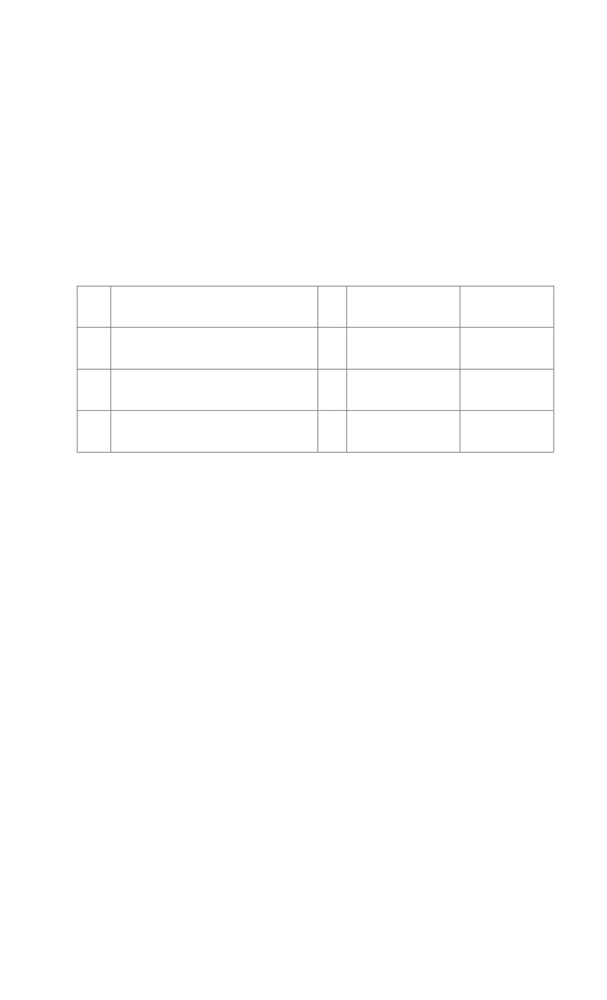

BERITA ACARA TIMBANG BERSAMA KELAYAKAN UJIAN PROMOSI
MAHASISWA PROGRAM DOKTOR PPs-UNM
PROGRAM STUDI Ilmu Pendidikan
Yang bertanda tangan di bawah ini Tim Penelaah Kelayakan ujian lanjut mahasiswa an:
N a m a
: A.M Irfan Taufan Asfar
Nomor Pokok
:
14A17007
Program Studi
: Ilmu Pendidikan S3
Judul Disertasi
: Pengembangan Model Pembelajaran Connecting Extending Review
(Cer) Untuk Meningkatkan Kemampuan Penalaran Matematika Siswa
No.
N a m a
Gol
Jabatan
Tanda Tangan
1.
Prof. Dr. H. Hamsu Abdul Gani, M.Pd
IV
1…………….
Direktur/Kopromotor
2.
Prof. Dr. H. M Arifin Ahmad, M.A
IV
Kaprodi/Promotor
2………
3
Dr. Sulaiman Samad, M.Si
IV
Wakil Direktur 1
3………….
Yang bersangkutan oleh Tim Penelaah dinyatakan: Layak / Tidak Layak *)
ke Ujian Promosi
Catatan:
-
Makassar, 12 November 2021
Ketua Program Studi,
Prof. Dr. H. M. Arifin Ahmad, M.A
195002121976061001